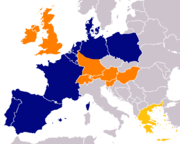

Karl and Theo Albrecht were born and raised in modest circumstances in Essen, Germany. Their father was employed as a miner and later as a baker’s assistant. Their mother had a small grocery store in the worker’s quarter of Schonnebeck, a suburb of Essen. Theo completed an apprenticeship in his mother’s store, while Karl worked in a delicatessen shop. Karl also served in the Wehrmacht during World War II. After the war, the brothers took over their mother's business. The first Aldi (Albrecht-Discount) was opened in 1961.
In 1961, Aldi's operations were divided between the brothers, with Karl taking control of the more profitable Aldi Süd (South), and Theo managing Aldi Nord (North).

In 1994, Karl Albrecht removed himself from the daily operations of Aldi Süd and took the position of chairman of the board. At the beginning of 2002, he also relinquished this position, thereby completely ceding control of the firm. Today, the business is no longer run by any of Karl Albrecht’s family members.